So, we're making a open world game here, so let's begin with getting a world toghether that fits our needs. Based on the idea of the four elements, we knew we had to have 4 zones the player would progress through, and after we charted a small universe bacgkround story we created a layout of the map. The software we used to generate the map from our layout is World Machine. There are newer and shinier tools but this one fit quite well. World Machine can export files as raw(16bit) wich we then can use in Unity as the Terrain heightmap. This is the result after importing into Unity:
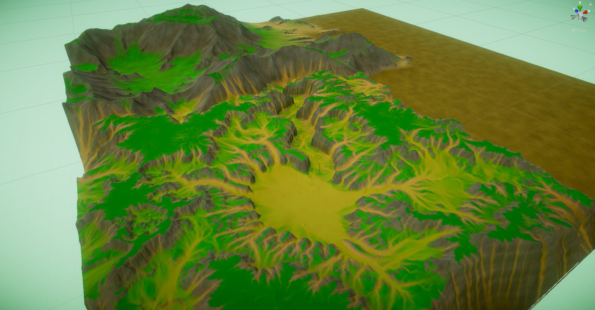For Elements, we're aiming for a low-poly flatshaded style and to achieve this we needed to convert the terrain to a mesh and although this could be achieved by a custom script, i bought a really handy tool from the Unity asset store. After importing and playing around with the parameters, this is what we have:
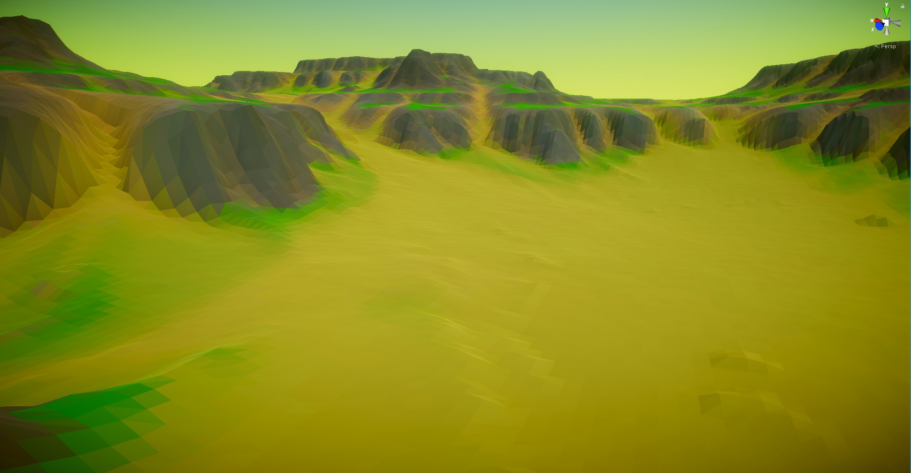The tool converts the terrain to a mesh dividing it into chunks and automatically creates lower detail meshes to display when the camera is far away (LODs).
Terrain Shader
We explored various possibilites to texture the terrain, but we needed a solution that would
easily port from
heightmap based terrain to a mesh. This meant that splatmap texturing and tri-planar
splatmaps were probably gonna be a nightmare
so for a while we would just bake a texture from World Machine and apply it to the whole
terrain.
This worked fairly well
but every time there were significant changes to the terrain, we would have to rebake the
texture and re-import it.
After looking for a solution, we ultimately decided to write our own terrain shader that
would dynamically account for slope and altitude.
As an added bonus, writing our own shader also means we can add support for vertex coloring
with Polybrush to add little details as needed.
The only minor drawback is that World Machine is also generating an erosion flowmap and
since there's no way to generate one with the final result,
we just used the one World Machine gives us (it still gives really good results).
So, for this shader we made use of Unity's surface shaders. It's basically the same as
writing any vertex-fragment shader but taking away all of the lighting
calculations away from you by only defining a "surface function". It's possible to specify
all kinds of stuff (like a specific lighing model) including a custom vertex function.
I'm going to explain how to achieve a similar effect but i'll leave out most of the code
because is not relevant to understanding how the shader works (it's mostly boiler plate
code).
In the surface function, we begin by getting some information, first we need to know the
slope and we understand that from the y value in the world normal :
float3 slope = saturate(1- saturate((IN.worldNormal.y))*_SlopeMultiplier);
After that, we need the world height:
float height = ((IN.worldPos.y)/_HeightMultiplier);
As you can see, everything until now was tied to a parameter from the inspector (_SlopeMultiplier and _HeightMultiplier), doing so helps you achieve any specific effect without having to edit the shader in the future. To make the height percent share the same property, we need to use some math to get a custom range so we create a function to help us to that:
float3 inverseLerp(float pos, float lowThreshold, float highThreshold) {
return (saturate((pos - lowThreshold) / (highThreshold - lowThreshold)));
}
...
float heightPercent = inverseLerp(IN.worldPos.y,0.1, _HeightMultiplier);
...
In this step we're creating a smooth gradient going from complete darkness at y=0 to pure white at y=_HeightMultiplier. Now we need to sample our texture from World Machine (in the code it's called _DepositTex). In reality, the texture is an RGBA texture with all the colors for the terrain texture, so we only need the alpha channel (where the flowmap is stored).
float deposit = tex2D(_DepositTex, IN.uv_DepositTex).a;
So now that we have all the information, but we now need to transform it in a color to display on the screen. So for our example there are 3 height based "biomes": Snowy, Grassy and Sandy. We create two range values in the inspector for a start and end of every biome and create a function to use those parameters. What we want is basically a white strip between the biome start and the biome end while everything else is black, and we do so for every biome. After that is simply a matter of multiplying everything together.
float2 colorInRange(float start, float end, float heightPercent) {
float2 interpolated= float2(0,0);
interpolated.x = smoothstep(start, end, heightPercent);
interpolated.y = smoothstep(end, start, heightPercent);
return interpolated;
}
...
float2 snowRange = colorInRange(_SnowStart, _SnowEnd, heightPercent);
float2 grassRange = colorInRange(_GrassStart, _GrassEnd, heightPercent);
float2 sandRange = colorInRange(_SandStart, _SandEnd, heightPercent);
c *= saturate((grassRange.y * grassRange.x * _GrassColor)
+ (sandRange.y * sandRange.x * _SandColor)
+ (snowRange.y * snowRange.x * _SnowColor)
+ (slope * _RockColor))
+ (deposit * _DepositColor);
c *=(IN.vertexColor); //Add support for vertex colors
This is one of the strip we created when using the colorInRange function:
And we're done! This shader is actually also very useful to make rocks blend with the terrain because we're using the same material. Here's how it looks:
Terrain Vegetation & Rocks
We've looked for an easy solution for placing trees an rocks on a mesh and the only viable solution we came up with was using the Polybrush tool for Unity. This approach had two downsides:
- Quite slow: requires to paint different trees and rocks all over the large terrain.
- The result can be good, but it heavily depends on your enviromental artist skills.
So we needed a way to place a large number of trees without having all of them needed to be placed by hand so we decided to go with a custom script that places objects randomly based on slope and height at that particular point. These are the parameters:
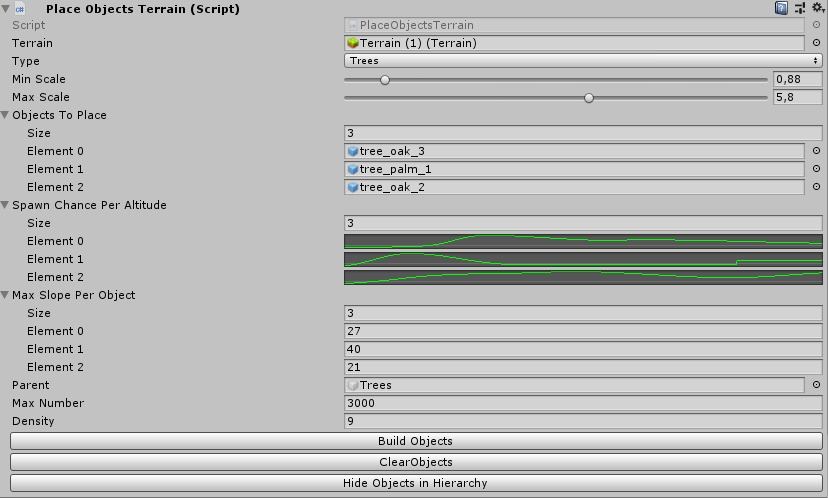We use a curve to describe how likely it is for an object to spawn at increasing altitudes. The slope parameter on the other hand is the maximum slope at which the object can spawn.
Fine tuning the rock placement
The algorithm works fine for trees but it's not as good for rocks, so we made some changes. The first change we made to the rock placement algorithm was using a Gaussian distribution for the size instead of a random number in the specified range. While working correctly, we decided to change things a little. The old version would scale the rock based on the altitude: the higher up it was, the smaller it would be. This approach however had a problem:
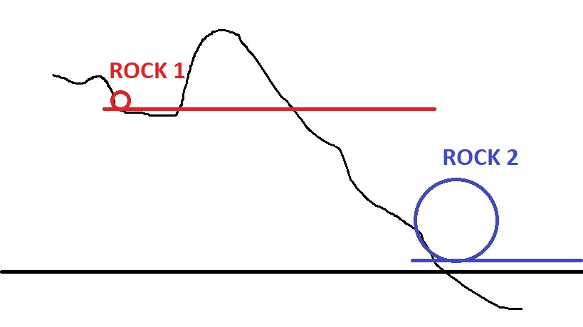The algorihm would make Rock 2 bigger because it's much closer to sea level. That might seem like a good thing but in reality, Rock 1 shouldn't be much smaller than Rock 2 because locally, it's on a pretty high and steep cliff. The modified algorithm will check the sorroundings of every rock to find a local minimum (or low point) and scale the rock appropriately. It's pretty difficult to get a screenshot of the full range of sizes but here's what it looks like:
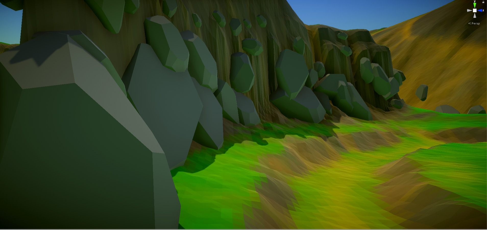Our rock and tree placement script has a way to delete all objects and trees but no way of deciding which to keep so we needed to find a way to make the rocks and trees we liked to stick around. We decided to make all of these objects a child of the "level" object. This worked but we soon realised that generating trees or rocks again for another section of the map would clutter all the other areas with new ones. To fix this, we decided to write a script that would destroy any tree or rock it would collide with assuming it wasn't part of the level itself:
[ExecuteInEditMode]
public class RemoveTerrainObjects : MonoBehaviour
{
public GameObject terrainObjectsParent;
List colliders;
public void OnEnable() {
colliders = new List(terrainObjectsParent.GetComponentsInChildren());
}
#if UNITY_EDITOR
public void Update() {
for (int i = 0; i < colliders.Count; i++) {
if ((GetComponent().bounds.Intersects(colliders[i].bounds)) && colliders[i]!=null) {
DestroyImmediate(colliders[i].gameObject);
colliders.RemoveAt(i);
}
}
}
#endif
}
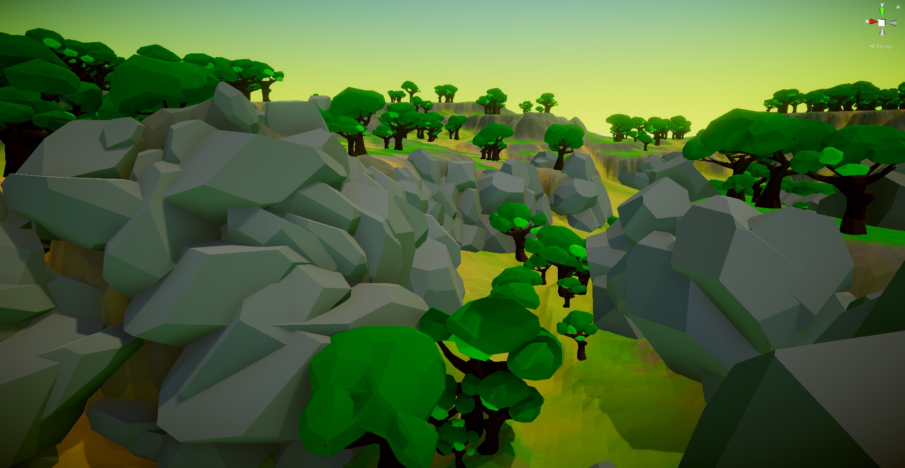
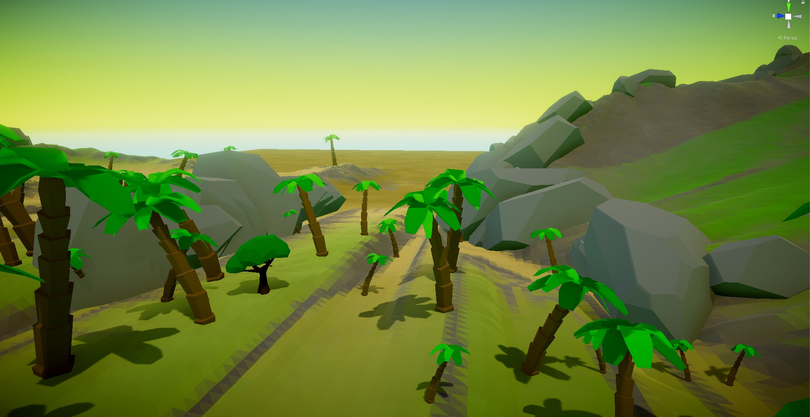

I guess it's now time to put it all toghether. We added proper rim lighting, some fog, and some post processing (was alrady there actually) and we get the final result for the Elements terrain and enviroment. Note that when 3D models will be added the terrain could be adjusted and the tree (and rock) placement algorithm could be re-run to get the updated version. Here's some screenshot of the final result:
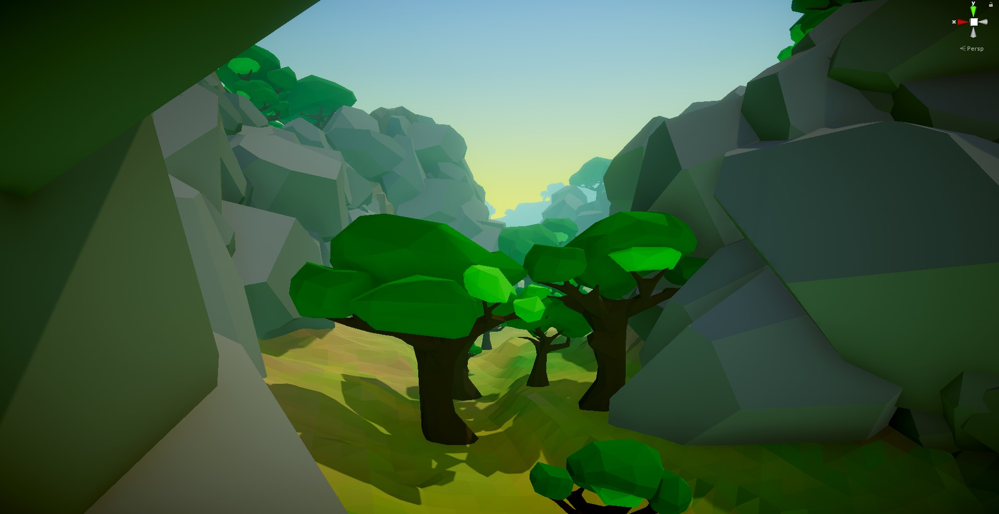 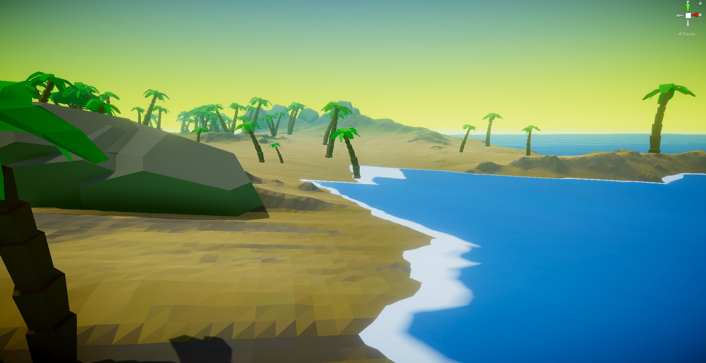 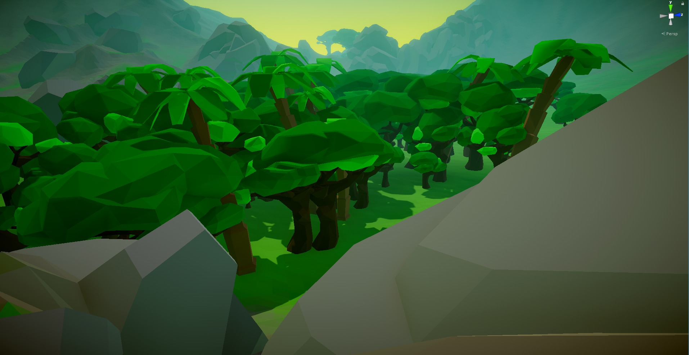 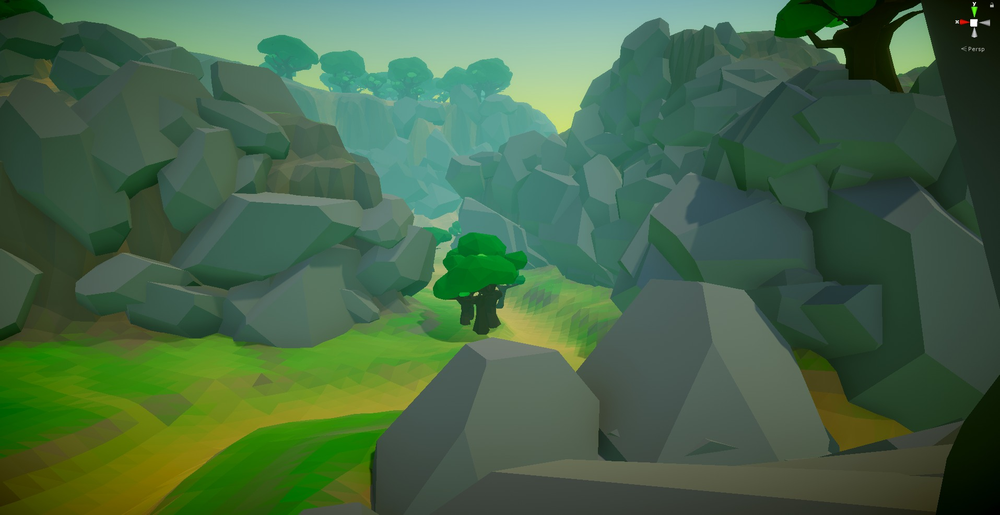